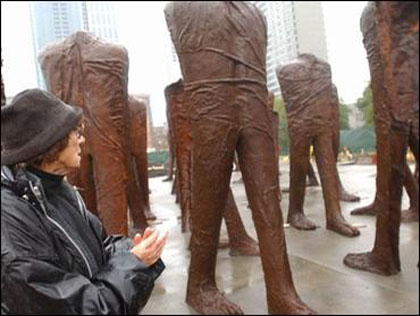

Chicago's Parks and Beaches
Chicago is an urban outdoor playground with 26 miles of lakefront, 25 beaches, miles of green space, and hundreds of parks — all connected by an
18.5 mile multi-use path along the shores of Lake Michigan. That adds up to a slice of outdoor heaven for bikers, runners, boaters, sunbathers, culture
lovers, and nature enthusiasts. Within the Chicago city limits, there are more than 7,600 acres of parkland split up into 570 individual parks with lots
to offer, from its northernmost point at Ardmore Avenue south to 71st Street, touring diverse and vibrant neighborhoods such as Lincoln Park,
Streeterville, the Loop, and Jackson Park as you go.
The beaches in Chicago are an extensive network of waterfront recreational areas operated by the Chicago Park District. The Chicago metropolitan
waterfront includes parts of the Lake Michigan shores as well as parts of the banks of the Chicago, Des Plaines, Calumet, Fox, and DuPage Rivers and
their tributaries. The waterfront also includes the Illinois and Michigan Canal and the Sanitary and Ship Canal. Historically, the waterfront has been
used for commerce, industry, and leisure. Leisure, such as fishing, swimming, hunting, walking and boating, was much more prevalent throughout the river
sections of the waterfront system early in the 19th century before industrial uses altered the landscape. By midcentury, much leisure shifted to Lake
Michigan as a result of industrial influence. The first City of Chicago Public Beach opened in Lincoln Park in 1895. Today, the entire 28 miles Chicago
lakefront shoreline is man-made, and primarily used as parkland. There are 24 beaches in Chicago along the shores of freshwater Lake Michigan. Typically,
Chicago beaches take the name of the east-west street that runs perpendicular to the lake at each beach's location. Included below, is a short list of
10 top parks and beaches in Chicago.
Lincoln Park
What began as a small public cemetery on what was then the city’s northern fringes is now the front yard for
most of the city’s North Side, from the north end of Lake Shore Drive at Hollywood Avenue south all the way to
North Avenue. You’ll see kids flying kites in the summer and sledding in the winter. The Sydney R. Marovitz
Golf Course puts you right up against Lake Michigan as you tee off. You can practice your golf skills at the
driving range, or bring the kids for a round of miniature golf on the 18-hole course featuring waterfalls and
footbridges. Professional groups perform plays in the Theater on the Lake. Just inland along Fullerton Parkway,
the tropical plants and flowers at the Lincoln Park Conservatory are always on display for free, as are all
the animals at the Lincoln Park Zoo. And at the southernmost end, you’ll find the Chicago History Museum.
Also part of Lincoln Park is a bird sanctuary, a paddleboat lagoon, a pond with prairie plants and wildlife, and statues of historical
figures, including Abraham Lincoln.
Millennium Park
Not long ago, an undignified below-grade rail yard and parking lot occupied this land at the northwest corner of
Grant Park downtown. But in the six years sin ce it opened, Millennium Park has quickly grown to become one of the
city’s most popular tourist attractions. When weather permits, kids splash in the Crown Fountain, where jets of
water flow from the giant video images of Chicagoans’ faces. The Lurie Garden offers quiet and botanical beauty.
Tourists and locals alike line up to get their picture taken in front of “Cloud Gate,” better known as the Bean.
The central attraction at Millennium Park is the Jay Pritzker Pavilion, which hosts the annual Celtic, Gospel, Latin and
Country Music festivals, summertime classical concerts by the Grant Park Symphony Orchestra, and an assortment of other
performances from world music to mainstream rock. Just to the east, the 1,525-seat Harris Theater for Music and Dance
features everything from ballet to folk concerts. And in the winter months, strap on your ice skates for the McCormick
Tribune Ice Rink.

Grant Park
It’s the front yard for downtown Chicago, and some of the most beautiful sights in all the city can be found
there. At the north end, the quiet Daley Bicentennial Plaza offers everything from yoga to 16-inch softball, and
an ice rink during the winter. But expect a crowd south of Monroe Drive, particularly during the summer months.
Many summer concerts have moved to the Pritzker Pavilion in recent years, but the Petrillo Music Shell is still the
place to be for the Blues and Jazz festivals. You can lay a blanket on the lawn in front, or if you’re early enough,
get one of the seats at the edge of the stage. Southeast of the Petrillo is the dazzling Buckingham Fountain, one
of the city’s most treasured landmarks. The center jet shoots 150 feet into the air every hour, and a light show
illuminates the waters at night. Beyond Buckingham Fountain is Hutchinson Field, the site for the annual
Lollapalooza music festival, and the stage for Barack Obama’s election night rally when he was elected president
in 2008. To the west of Hutchinson Field is the striking sculpture “Agora” by Magdalena Abakanowicz, which depicts
walking cast-iron figures without heads or arms. Grant Park is also home to three of the city’s most famous museums
– the Art Institute, the Field Museum and Shedd Aquarium, on the Museum Campus at the southern edge of the park.
Burnham Park
It may not have the prominence of the other lakefront parks, but Burnham Park has a lot to offer nonetheless.
It extends from the Museum Campus south all the way to the north end of Jackson Park at 56th Street. Soldier Field,
McCormick Place and their surface parking lots take up the north end of Burnham Park. But just to the east, the old
Meigs Field has transformed into Northerly Island Park, with a 30-acre prairie, a network of strolling paths, and a
major concert venue at the Charter One Pavilion. At the north end of Northerly Island is the Adler Planetarium.
South of McCormick Place, among the highlights are a popular skate park at 31st Street, and at 55th Street adjacent
to the Hyde Park neighborhood, the breathtaking Promontory Point.
Jackson Park
The magnificent Museum of Science and Industry at the north end of this glorious park draws more than 1.5
million visitors a year. But the park continues for another mile south, and there’s plenty more to see. Jackson
Park was designed by Frederick Law Olmsted and Calvert Vaux, the same team that was behind Central Park in New York.
The park is well known as the main site for the 1893 World’s Columbian Exposition. The museum occupies the only
remaining building from the fair, but there are other reminders, most notably the shimmering gold Statue of the
Republic at Hayes and Richards drives. It is a one-third size replica of the original statue that graced the
World’s Fair. On Wooded Island a short distance south of the museum, look for the serene Osaka Japanese Garden,
with its formal gates and pavilions and babbling waterfall. Also on the island is the Paul H. Douglas Nature
Sanctuary, a favorite spot for birdwatchers. The 63rd Street Beach House is an impressive Mediterranean Revival
building with landscaped courtyards, and airy open balconies that look out toward the lake. The park also features
an 18-hole golf course.
Maggie Daley Park
Kids of all ages run wild at Maggie Daley Park, a mega playground modeled after the fantasy worlds of Alice in
Wonderland and Charlie and the Chocolate Factory. The park’s Play Garden spurs kids’ imaginations with everything
from a giant water-spraying whale, a boat to climb and captain, huge upside-down trees, and even a Tower Bridge.
You’ll also find mini golf, climbing walls, and an all-seasons Skating Ribbon where you can skate and scooter in
the summer and ice skate in the winter.
North Avenue Beach
If you love the sun at your back and sand beneath your feet, then make a bee-line for North Avenue Beach, one of
24 Chicago beaches located along Lake Michigan’s shores. Rent a powerful WaveRunner at Jet Ski Chicago, or hit the
waves with a wave board or paddleboard at Great Lakes Board Company. Or do a little outdoor yoga with Sun and Moon
Beach Yoga. And if you love volleyball, then know that the Chicago Sport and Social Club — the world’s largest
volleyball league — has called Chicago home for the last three decades. Rent a court and equipment at North Avenue
Beach — and try not to be distracted by the great city and lakefront views.
Montrose Beach
Montrose Beach is so much more than sand and pretty views. Migratory birds flock to this location over the fall
and spring seasons, with Montrose Point Bird Sanctuary recording over 300 species to date, including some of the
rarest birds ever recorded in the state. Additionally, a serene area of naturally forming dunes features a unique
habitat specific to the Lake Michigan shoreline, where endangered plant life thrives. Plus, there are those pretty
views, too.
Oz Park
Located in the Lincoln Park neighborhood, Oz Park is an intimate green space celebrates kids’ classic, The Wizard
of Oz. Dorothy’s Playlot is filled with play equipment for little ones to climb, swing on, and run around. In the
Emerald Garden, families enjoy a leisurely afternoon among beautiful blooms. And most magical of all are the statues
of the Tin Man, Scarecrow, Cowardly Lion, and Dorothy and Toto that greet you.
Northerly Island
Northerly Island is a man-made peninsula that juts dramatically into Lake Michigan. It’s populated with beautiful
strolling paths, prairie grasses, casual play areas, great fishing spots, public art, and spectacular lake and city
skyline views — just as architect and planner Daniel Burnham had envisioned. Most famously, Northerly Island is the
site of Adler Planetarium, the oldest planetarium in the Western Hemisphere, and home to Doane Observatory. Both
Northerly Island and the Adler are part of the city’s phenomenal Museum Campus, which includes the Field Museum
(packed with natural history marvels, and Shedd Aquarium (one of the world’s largest aquariums). Concert venue
Huntington Bank Pavilion is also located at Northerly Island. This huge outdoor amphitheater holds over 30,000
people, and commands incredible views of the city and lakefront.